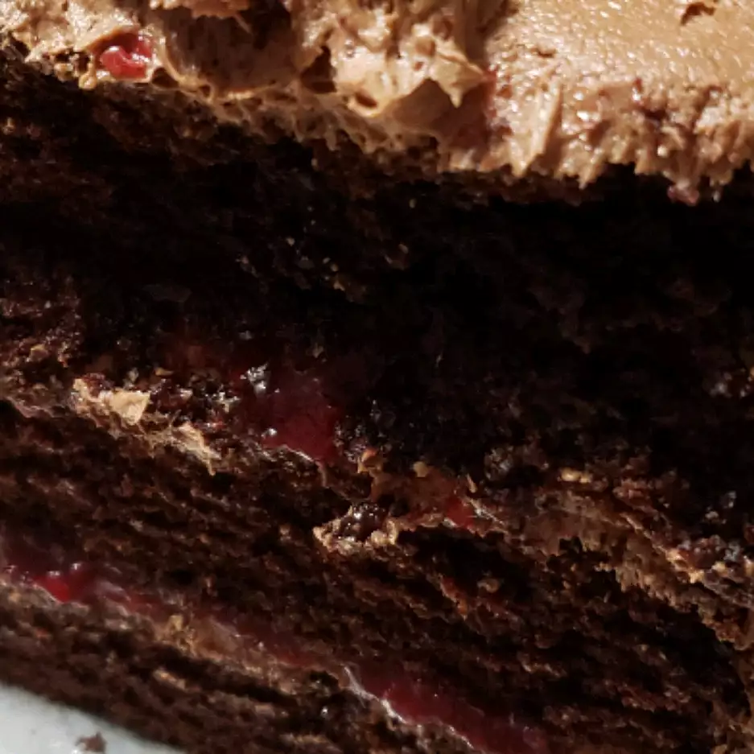

Index
Chocolate Cake

Description
This chocolate cake is made with cocoa and hot coffee.
It has been in my family forever.
The secret is to not overbake it — that will ruin a chocolate cake every time.
- Prep: 15 mins
- Cook: 35 mins
- Total: 50 mins
- Servings: 24
- Yield: 1 9x13-inch cake
Ingredients
- 2 cups all-purpose flour
- 2 cups white sugar
- ¾ cup unsweetened cocoa powder
- 2 teaspoons baking soda
- 1 teaspoon baking powder
- ½ cup vegetable oil
- 1 cup milk
- 2 eggs
- 1 teaspoon vanilla extract
- 1 cup hot, strong coffee
Steps
- Preheat the oven to 350 degrees F (175 degrees C).
Grease and flour a 9x13-inch baking pan.
- In a large bowl, stir together flour, sugar, cocoa, baking powder, and baking soda.
Add oil, milk, eggs, and vanilla; mix until smooth. Stir in hot coffee last.
Spread evenly into the prepared pan.
- Bake in the preheated oven for 25 to 35 minutes, or until a toothpick inserted into the cake comes out clean.